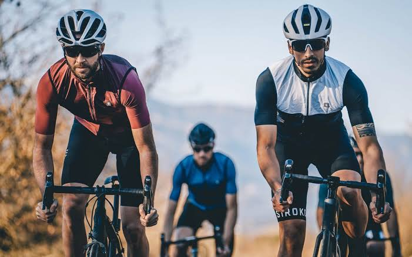

Alquiler
Contamos con bicicletas urbanas, de montaña y eléctricas en excelente estado.
Rueda Libre
Bienvenido a Rueda Libre. Aquí podrás explorar Medellín sobre dos ruedas. Alquila tu bicicleta o únete a nuestros tours guiados para vivir la ciudad de una forma única. ¡Tu ruta empieza aquí!
En Rueda Libre creemos que la mejor manera de descubrir Medellín es sobre dos ruedas. Somos una iniciativa que busca conectar a las personas con la ciudad a través de experiencias en bicicleta, combinando aventura, diversión y turismo.
Nuestro objetivo es ofrecer una forma diferente de explorar Medellín, recorriendo sus calles, descubriendo sus lugares más emblemáticos y disfrutando de sus paisajes mientras promovemos una movilidad más sostenible y saludable. Encuéntranos. ¡Tu ruta empieza aquí!

Contamos con bicicletas urbanas, de montaña y eléctricas en excelente estado.
Descubre la historia, el arte urbano y los parques más icónicos de Medellín acompañado por guías locales expertos.
Diseñamos rutas personalizadas para grupos, familias o eventos de empresas.
Descubre la historia de Medellín con un guía experto. El recorrido incluye hidratación y asistencia técnica.
¿Quieres asegurar tu rodada? ¡Reservar ahora!

Conoce la variedad de bicicletas disponibles para alquilar por hora y vive la mejor experiencia en Rueda Libre.

Cómoda y liviana para las ciclorrutas.
$10.000 / hora
Reservar
Se dobla en segundos; ideal para combinar con el metro.
$12.000 / hora
Reservar
Suspensión delantera y 21 cambios para las subidas.
$15.000 / hora
Reservar
Para rutas mixtas de asfalto y destapado.
$18.000 / hora
Reservar
Asistencia eléctrica con 45 km de autonomía.
$25.000 / hora
Reservar
Para niños de 6 a 10 años.
$8.000 / hora
Reservar
Para dos personas; perfecta para pasear en pareja.
$20.000 / hora
ReservarTres recorridos guiados para conocer Medellín sobre dos ruedas.

12 km · 2 h · Fácil

18 km · 3 h · Medio

25 km · 4 h · Difícil
Beneficios de usar bicicleta
Cada bicicleta pasa por una revisión técnica antes de cada alquiler.
Tu seguridad está cubierta desde el primer minuto.
Guías locales expertos en la historia y cultura de Medellín.
Puntos de devolución en tres sedes de la ciudad.
Estamos en el corazón de Medellín. Ver ubicación en Google Maps.
Dirección: Calle 10 # 43A - 25, El Poblado, Medellín. Nos encontramos a 5 minutos de la estación Poblado del Metro.